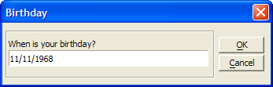

UI_GET_DATE()
Syntax
Result_String as C = UI_GET_DATE( Title as C, Caption_Text as C [, Default_Date_String as C ] )
Argument | Description |
Title | The title of the dialog box. |
Caption_Text | The descriptive text next to the date field. |
Default_Date_String | A default value to display in the date field. |
Description
UI_GET_DATE() creates and displays a dialog box containing a date field. This function is useful for obtaining a valid date. The date you enter or change is returned as a Result_String. You can then convert this string into a date value using the CTOD()function. If the result string is empty (i.e., ""), you pressed the Cancel button and no date value was specified.
You define the descriptive text next to the date field with the Caption_Text parameter.

Limitations
Desktop applications only.
Example
This script computes the day on which you were born.
dim birthday as D date_string= UI_GET_DATE("Birthday", "When is your birthday? ", "11/11/68") if date_string <> "" then birthday = ctod(date_string) ui_msg_box("Happy Birthday!","You were born on a " + cdow(birthday)) end if |
See Also
((User Interaction _UI_ Functions|User Interaction (UI) Functions)), Date and Time Functions